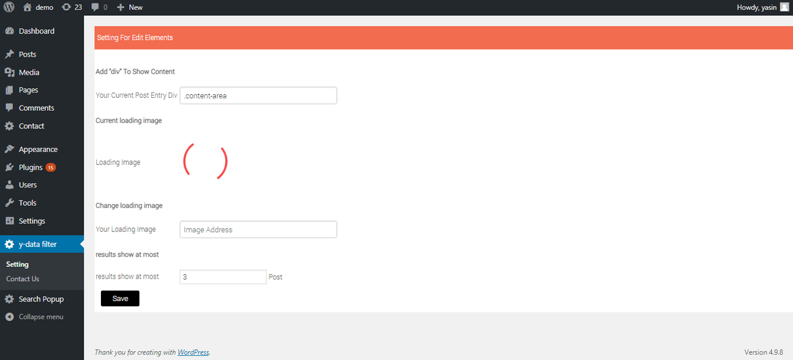

Installation
To add a WordPress Plugin using the built-in plugin installer:
- 1-Go to Plugins > Add New.
- 2-Upload ajax_data_filter.zip plugin zip file
- 3-Click on install Now
- 4-If successful, click Activate Plugin to activate it, or Return to Plugin Installer for further actions.
For information on how to install a WordPress Plugin manually, see this manual installation guide below.
Quick Start - Make A Filter
To get started, click on the menu Post > Add New.
You can add filter to all published posts and you dont limit to make a filters.
Show Results
You can select all filters or one.
Add Class Or Id Post Entry

To show filter results we need id/class div. better your main post div seleceted.
Change loading image
You can upload your image for loading
- 1- Upload image on wordpress media
- 2- Copy image link from media
- 2- insert image link on "image address" box.
Widget Ajax Data Filter
Add To widget 'Data Filter' And Reday To Use.
Change Post Style
you can use your theme post style to this plugin.
- step 1: Go to theme post entry and find: "<?php while (have_posts()) : the_post(); ?>" and "endwhile".
- step 2: Copy All Code between this loop.
- step 3: Go to plugin folder and find folder "inc->post".
- step 4: Replace Code into post.php